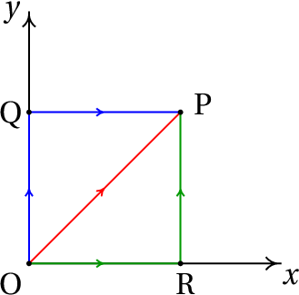
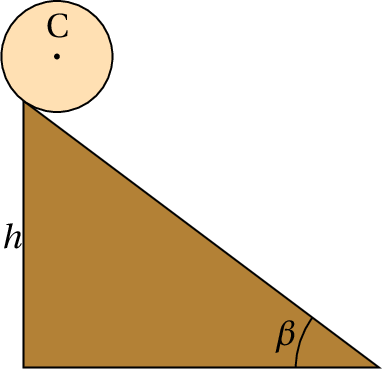

Num salto com vara, a energia cinética da corrida inicial é convertida em energia potencial elástica da vara dobrada. Enquanto a vara recupera a forma reta, essa energia potencial elástica é transformada em energia potencial gravítica. No instante em que a vara recupera a forma reta o saltador exerce sobre a barra uma força vertical, para baixo, aumentando ainda mais a sua energia potencial gravítica para atingir uma altura maior; finalmente, o saltador larga a vara e cai livremente transformando-se a energia potencial gravítica em energia cinética.
A segunda lei de Newton (equação 4.4)
onde é a resultante de todas as forças externas, conduz a uma relação útil chamada teorema do trabalho e da energia cinética. Para demonstrar esse teorema, considere-se um deslocamento vetorial infinitesimal durante um intervalo infinitesimal de tempo (figura 6.1).

No limite infinitesimal em que tende para zero, o deslocamento vetorial é na direção tangencial e com módulo igual ao deslocamento ao longo da trajetória:
Usando esta expressão e multiplicando com produto escalar os dois lados da equação 6.1 pelo deslocamento infinitesimal, obtém-se
A equação cinemática implica que é igual a e, como tal,
Integrando os dois lados da equação desde uma posição , onde a velocidade é , até outra posição onde a velocidade é , obtém-se o teorema do trabalho e a energia cinética:
A função da velocidade:
chama-se energia cinética e o integral da componente tangencial da força ao longo da trajetória chama-se trabalho da força:
Ou seja, o teorema estabelece que
O trabalho realizado pela força resultante, ao longo da trajetória, é igual ao aumento da energia cinética da partícula.
Observe-se que em geral o trabalho de uma força pode ser calculado integrando ao longo de qualquer curva, mas se essa curva não é a trajetória da partícula, o resultado pode não ser igual ao aumento de energia cinética. Em geral, um integral de linha entre dois pontos produz diferentes valores para diferentes curvas que unem esses pontos.
Unicamente a componente tangencial da força realiza trabalho ao longo da trajetória e pode alterar a energia cinética da partícula. Uma força perpendicular à trajetória não realiza trabalho e não altera a energia cinética da partícula.
O trabalho e a energia cinética têm unidades de energia, ou seja, joules no Sistema Internacional de unidades (1 J = 1 N·m).
Em coordenadas cartesianas, o deslocamento infinitesimal é,
Um canhão dispara uma bala com 5 cm de raio, desde o terraço de um edifício, na posição inicial (em metros):
com velocidade inicial (metros sobre segundo):
determine a altura máxima atingida pela bala (valor máximo da coordenada ) e a posição em que a bala bate no chão ( ).

Resolução. Este é o mesmo exemplo 2.3 que já foi resolvido no capítulo 2, mas será agora resolvido através do trabalho e do impulso. Uma bala metálica tem massa volúmica aproximadamente 8 vezes maior que a da água. Nessas condições, a velocidade terminal da bala é da ordem de 132 m/s. O problema será resolvido ignorando a resistência do ar e a solução obtida será usada para comparar a velocidade máxima com a velocidade terminal. Um valor da velocidade máxima próximo ou por cima da velocidade limite indicará que a solução obtida tem um erro elevado.
No sistema de eixos da figura, o peso escreve-se e o impulso que produz desde o instante do lançamento da bala, , até um instante posterior é,
igualando o impulso à variação da quantidade de movimento, e dividindo pela massa, obtém-se,
Assim sendo, as componentes e da velocidade permanecem constantes. O valor mínimo do módulo da velocidade ocorrerá no instante em que ( ) for igual a zero; o valor mínimo da velocidade, , corresponde ao ponto de altura máxima.
O trabalho realizado pelo peso é:
igualando à variação da energia cinética e dividindo pela massa,
Substituindo pelo valor mínimo da velocidade, calcula-se a altura máxima
Para calcular a posição em que a bala bate no chão, calcula-se o valor da velocidade, quando a bala bate no chão, substituindo na equação 6.10:
e, de acordo com a equação 6.9, o quadrado do módulo da velocidade é:
(tendo em conta que o tempo é positivo). Durante esse tempo, o deslocamento horizontal é igual a: , já que a componente horizontal da velocidade é constante. Somando os valores das componentes e na posição inicial, obtém-se a posição em que a bala bate no chão:
Observe-se que os resultados são ligeiramente diferentes dos que foram obtidos no exemplo 2.3. Em ambos casos os resultados intermédios foram apresentados arredondando para 4 algarismos significativos, mas todos os cálculos foram feitos usando formato de vírgula flutuante com precisão dupla (16 algarismos significativos). A diferença está em que, apesar de o tempo que a bala demora em bater no chão aparecer igual nos dois casos (3.855 s) os valores internos em precisão dupla são diferentes, por terem sido usados métodos diferentes e o erro numérico é diferente nos dois casos.
O valor máximo da velocidade, atingido quando a bala bate no chão, é 34.55 m/s. Como esse valor é muito menor que a velocidade terminal (132 m/s), a solução obtida ignorando a resistência do ar não estará muito longe da solução verdadeira.
O teorema do trabalho e da energia cinética só contém uma parte da informação contida na segunda lei de Newton, já que a equação vetorial 6.1 são realmente 3 equações (uma para cada componente) agrupadas convenientemente em vetores. Contudo, é possível extrair as mesmas três equações a partir da energia cinética. Tendo em conta que:
então as três componentes cartesianas da equação 6.1 obtêm-se assim:
e de forma análoga para as componentes e . Esta equação é generalizada no capítulo 8 para qualquer outro sistema de coordenadas diferentes das cartesianas.
Uma força que depende unicamente da posição chama-se conservativa, se o integral de linha entre dois pontos nas posições e ,
dá o mesmo resultado, para qualquer percurso possível desde ate .
Assim sendo, é possível escolher um ponto arbitrário na posição e definir uma função que em qualquer ponto:
observe-se que com essa definição, na posição .
A função não pode ser definida quando o resultado do integral de linha em 6.14 não está bem definido, ou seja, quando o resultado é diferente usando diferentes percursos. A escolha do sinal negativo na definição é explicada mais à frente. A função tem unidades de energia e denomina-se energia potencial associada à força conservativa . A vantagem de definir energias potenciais é que é uma função escalar, mais simples do que a função vetorial , que permite caraterizar completamente a força; ou seja, dada uma energia potencial qualquer é possível encontrar a expressão da força associada.
Usando o teorema fundamental do cálculo vetorial, o integral de linha da força conservativa é igual a:
isto é:
O trabalho realizado entre dois pontos por uma força conservativa é igual à diminuição da energia potencial associada a essa força.
Observe-se que o trabalho é igual à diminuição da energia potencial, e não o seu aumento, devido à escolha do sinal negativo na definição da energia potencial. observe-se também que a definição 6.14 implica que a energia potencial tem valor nulo na posição de referencia ; o efeito de usar diferentes escolhas do ponto de referencia é acrescentar ou subtrair uma constante a em todos os pontos, mas as diferenças de energia potencial, , são independentes do ponto usado como referencia. O valor numérico da energia potencial num ponto não tem nenhum significado físico; o que tem significado é a diferença dos valores da energia potencial em dois pontos.
Calcule o integral de linha da força , desde a origem O até o ponto P no plano , com coordenadas , usando os 3 percursos indicados na figura: C1 é o segmento de reta (R com coordenadas , ), seguido pelo segmento de reta , C2 é o segmento de reta (Q com coordenadas , ), seguido pelo segmento de reta e C3 é o segmento de reta .
Resolução. A equação vetorial do segmento de reta é: , com . Como tal, o deslocamento infinitesimal ao longo desse segmento é
e o integral de linha nesse segmento é:
A equação do segmento é , , o deslocamento infinitesimal é , e o integral de linha nesse segmento é igual a:
O integral de linha no percurso C1 é então igual a 1.5.
A equação do segmento é , , e o integral de linha nesse segmento é,
A equação do segmento é , , e o integral de linha nesse segmento é,
O integral de linha no percurso C2 é então igual a 2.5.
No segmento , é igual a e, como tal, a equação do segmento é , . O integral de linha no percurso C3 é então
Como o integral é diferente nos 3 percursos considerados, a força não é conservativa.
No exemplo 6.1 foi possível calcular o integral de linha do peso, sem conhecer a equação da trajetória parabólica da bala de canhão, nem ter de calcular a componente tangencial da força, porque como o peso é sempre na direção de , o produto escalar é sempre igual a , para qualquer deslocamento em qualquer direção, e o integral de linha reduz-se a um integral ordinário numa única variável.
Em geral, sempre que o produto escalar dependa de uma única variável, a força é conservativa porque o integral de linha reduz-se a um integral ordinário e o resultado depende apenas dos valores dessa variável, nas posições inicial e final. As secções seguintes mostram alguns exemplos.
Usando um sistema de coordenadas em que o eixo dos é vertical e aponta para cima, o peso é
o produto escalar é igual a . Ou seja, o peso é uma força conservativa e a energia potencial gravítica pode ser definida por:
Isto é, a energia potencial gravítica de um corpo num ponto é igual ao produto do seu peso e a altura do ponto. As alturas podem medir-se a partir de qualquer ponto escolhido como referencia.
Quando uma mola elástica é esticada ou comprimida, exerce uma força elástica nos dois extremos, no sentido que faz regressar a mola à sua forma original. Se é a elongação da mola, igual ao seu comprimento atual menos o comprimento que teria quando não estiver nem esticada nem comprimida, o valor absoluto de é diretamente proporcional a
onde é a constante elástica da mola. A equação 6.18 chama-se lei de Hooke.

A figura 6.2 mostra um procedimento usado para medir a constante elástica de uma mola. Pendura-se um objeto com peso , que estica a mola até ficar numa posição em que a força elástica equilibra o peso e mede-se a elongação; o valor da constante elástica é o peso usado, , dividido pela elongação.

Figura 6.3: Sistema com mola.
No sistema da figura 6.3, o cilindro pode deslocar-se ao longo de uma barra fixa e está ligado a uma mola com o outro extremo fixo num ponto fixo O. Em cada posição P do cilindro a elongação da mola considera-se positiva se a mola estiver esticada, ou negativa se a mola estiver comprimida; como tal, se o vetor aponta no sentido em que aumenta, o valor da força elástica é (faz diminuir quando é positiva ou aumentar quando é negativa). O produto escalar
depende unicamente da variável e, por isso, a força elástica é conservativa.
Usando como referência o valor (posição em que a mola não exerce nenhuma força) a energia potencial elástica é:
Uma força central é uma força que depende da posição e em cada ponto do espaço aponta na direção radial (reta que passa pela origem e pelo ponto) e com valor que depende unicamente da distância até a origem:
Como o produto escalar depende unicamente da variável , as forças centrais são sempre conservativas e a energia potencial associada é igual a:
O ponto de referência costuma ser colocado no infinito, porque estas forças costumam ser zero quando a distância é infinita. Dois exemplos de forças centrais são a força gravítica entre partículas e a força elétrica entre cargas pontuais.
As forças que não são função unicamente da posição não são conservativas. Por exemplo a reação normal e a força de atrito estático sobre um corpo são reações, que dependem das condições em que se encontra o sistema; colocando o mesmo corpo na mesma posição de uma mesa, mas com diferentes objetos colocados por cima, a reação normal tem valores diferentes. A força de atrito cinético também não é conservativa. Depende da reação normal e também depende da direção do movimento (direção da velocidade).
No teorema do trabalho e a energia cinética (equação 6.5), a resultante das forças externas pode ser escrita como a resultante de todas as forças conservativas mais a resultante de todas as forças não conservativas.
o lado direito é a energia cinética na posição final menos a energia cinética na posição inicial: . O primeiro integral no lado esquerdo é igual à soma dos integrais de todas as forças externas conservativas que atuam no sistema e é igual à diminuição da energia potencial total:
onde é a soma de todas as energias potenciais que existam (gravítica, elástica, elétrica, etc.). Passando esses termos para o lado direito da equação obtém-se:
Define-se a energia mecânica igual à soma da energia cinética mais potencial, em qualquer posição da trajetória:
e a equação anterior é o teorema do trabalho e a energia mecânica
O integral no lado esquerdo é o trabalho realizado por todas as forças externas não conservativas, ao longo da trajetória; ou seja,
O trabalho realizado pelas forças não conservativas, a longo da trajetória, é igual ao aumento da energia mecânica .
Uma consequência desse resultado é a lei de conservação da energia mecânica: quando todas as forças que realizam trabalho são conservativas, a energia mecânica do sistema permanece constante.
Observe-se que no integral do lado esquerdo da equação 6.27 o percurso de integração é a trajetória do corpo. Pode acontecer que a trajetória não seja conhecida previamente, mas de qualquer forma é uma curva única e bem definida. Se o integral de linha fosse calculado num percurso diferente à trajetória, o seu valor já não seria igual ao aumento da energia mecânica. O sinal negativo na definição da energia potencial prende-se ao fato de a energia mecânica ser definida como energia cinética mais potencial.
Observe-se ainda que, como a energia cinética nunca pode ser negativa, a energia mecânica (potencial mais cinética) em qualquer posição da trajetória é sempre maior ou igual que à energia potencial nessa posição.
O gráfico da energia potencial total de todas as forças conservativas é muito útil na análise do movimento. A figura 6.4 mostra um exemplo; a curva a tracejado representa a energia potencial total do sistema, em função da posição na trajetória, . A reta contínua é a energia mecânica; como é uma reta com ordenada constante, conclui-se que há conservação da energia mecânica e as únicas forças que realizam trabalho são todas conservativas.
As regiões do gráfico onde a reta da energia mecânica está por debaixo da curva de energia potencial são posições onde o sistema nunca pode estar, porque a energia mecânica é sempre maior ou igual que a energia potencial. Por exemplo, no caso da figura 6.4, o corpo não pode nunca estar nas posições , ou . Para poder alcançar essas posições, seria necessário aparecer outra força não conservativa que faça aumentar a energia mecânica.
A equação 6.24 significa que é uma primitiva de , com sinal trocado. Assim sendo, conclui-se que
ou seja, nos intervalos do gráfico de onde a função é crescente, a resultante das forças conservativas aponta no sentido negativo de e nos intervalos onde é decrescente, a força conservativa resultante aponta no sentido positivo de .
No caso do exemplo da figura 6.4, nos intervalos e , onde a energia potencial é decrescente, a componente tangencial da força resultante é positiva, isto é, aponta no sentido em que a posição aumenta. Nos intervalos e a componente da força é negativa (aponta no sentido em que diminui). Nos pontos , e a componente tangencial da força conserrvativa resultante é nula. Esses pontos onde o valor da força é nulo, chamam-se pontos de equilíbrio.
A energia mecânica não pode ser menor que . A reta da energia mecânica corresponde a um valor de 2.25 unidades. Com essa energia mecânica, o corpo só pode estar a deslocar-se numa vizinhança do ponto , ou numa vizinhança do ponto 5.
Nos pontos em que a reta da energia mecânica do corpo corta a curva da energia potencial, a energia cinética é nula e, como tal, a corpo fica em repouso; no entanto, o corpo não permanece sempre em repouso nesses pontos, porque a força nesses pontos não é nula.
Por exemplo, se num instante o corpo está na posição , deslocando-se no sentido em que aumenta, continua a deslocar-se no mesmo sentido, até parar perto de ; nesse ponto a força aponta no sentido negativo de , o que faz com que o corpo regresse para o ponto , mas agora com velocidade no sentido negativo de . O corpo aproximar-se-á do ponto , onde o valor da sua velocidade será nula; nesse ponto, como a componente tangencial da força é no sentido positivo de , o corpo regressa à posição começando novamente o mesmo ciclo.
Considere-se um carrinho de massa sobre uma superfície horizontal, ligado a uma mola com constante elástica , tal como mostra a figura 6.5. Se o atrito nos eixos das rodas, a massa das rodas e a resistência do ar são desprezadas, a única força que realiza trabalho é a força elástica da mola e há conservação da energia mecânica.

A trajetória é uma reta horizontal; escolhendo a origem O para medir a posição na trajetória, , na posição em que a mola não está nem esticada nem comprimida, a energia mecânica do sistema é,
A figura 6.6 mostra os gráficos da energia potencial e da energia mecânica constante. O carrinho oscila entre as duas posições e , onde a velocidade é nula, e cada vez que passa pela posição a energia cinética é máxima. O valor da amplitude do movimento oscilatório é , que depende do valor da energia mecânica; quanto maior for a energia, maior a amplitude.

A relação entre a amplitude e a energia mecânica obtém-se substituindo na equação 6.29:
A amplitude e a energia inicial não são valores caraterísticos do oscilador, mas são condições iniciais que dependem de como é colocado em movimento o sistema. A equação de movimento do sistema pode ser obtida aplicando a segunda lei de Newton, ou também derivando a expressão da energia mecânica (equação 6.29) em ordem ao tempo e resolvendo para a aceleração tangencial. O resultado é:
Resolvendo a equação cinemática , com condição inicial , obtém-se em função de
igualando essa expressão (no caso em que é positiva) à derivada e separando variáveis, obtém-se
onde o tempo é o instante em que o carrinho passa pela posição de equilíbrio . Calculando os integrais obtém-se a expressão para a posição em função do tempo
onde a constante , chamada frequência angular, é
e é uma constante que depende da escolha do instante em que é igual a zero. A frequência, que é o número de oscilações por unidade de tempo, é igual a,
e o período de oscilação é o inverso da frequência: .
A expressão 6.34 é a solução da equação diferencial . Qualquer outro sistema em que a segunda derivada da variável seja igual à variável vezes uma constante negativa, é chamado também um oscilador harmónico simples e a solução será semelhante a 6.34.
No movimento de translação de um corpo rígido, em cada instante todas as partes do corpo deslocam-se com a mesma velocidade e, com tal, a energia cinética total é igual a um meio da massa total vezes o valor da velocidade ao quadrado. No caso mais geral do movimento de rotação sobreposto à translação, para calcular a energia cinética total será necessário ter em conta que as velocidades de diferentes partes do objeto são diferentes. Conforme foi demonstrado no capítulo 3, a velocidade de cada ponto no corpo, em função da velocidade angular e da velocidade de um ponto fixo no corpo rígido, é:
em que é a posição do ponto relativa ao ponto de referência O.
A energia cinética total obtém-se somando a energia de todas as partes infinitesimais do corpo rígido, com massa ,
O valor da velocidade ao quadrado é,
O módulo de é , em que é a distância desde o ponto até um eixo que passa pelo ponto O, paralelo a . Substituindo na expressão da energia cinética,
O integral no primeiro termo é igual à massa total . Como foi referido na secção sobre o centro de massa, o único referencial em que o valor médio do vetor posição é nulo (equação (5.15)) é o referencial em que a origem está exatamente no centro de massa. Assim sendo, se o ponto de referência O for o centro de massa, o terceiro integral será nulo e obtém-se
em que é o momento de inércia em relação a um eixo que passa pelo centro de massa, paralelo a .
Uma esfera de massa e raio parte do repouso a uma altura numa rampa inclinada um ângulo com a horizontal. A esfera roda na rampa, sem deslizar. Determine o valor da aceleração angular da esfera e a velocidade do centro de massa quando a esfera chega ao fim da rampa.
Resolução. Como a esfera roda sem deslizar, o ângulo de rotação está relacionado com a posição do centro de massa C, de acordo com a expressão que foi obtida no capítulo 3 para rodas que rolam sem derrapar:
conclui-se então que o sistema tem um único grau de liberdade, que pode ser o ângulo que a esfera roda desde o instante inicial no topo do plano inclinado. O valor da velocidade angular é e o valor da velocidade do centro de massa é .
Escolhendo a posição no topo da rampa, com positivo no sentido em que a esfera desce e energia potencial gravítica nula em , em qualquer posição a esfera tem descido uma altura , em que é o ângulo de inclinação do plano inclinado. A energia mecânica total é,
Enquanto a esfera rode sem derrapar, a força de atrito com a superfície do plano é atrito estático, que não realiza trabalho. Ignorando a resistência do ar, a energia mecânica conserva-se e a sua derivada em ordem ao tempo é nula. Substituindo a expressão do momento de inércia da esfera em relação ao seu centro de massa, , na equação anterior, derivando em ordem ao tempo e igualando a zero, obtém-se
e a expressão para a aceleração angular é,
Como a esfera parte do repouso, no ponto inicial a sua energia cinética é nula e na parte mais baixa da rampa a energia cinética será igual à energia potencial gravítica inicial, 0, menos a energia gravítica final,
e a velocidade do centro de massa C no fim da rampa é
(Para conferir a sua resposta, clique nela.)


Perguntas: 1. C. 2. B. 3. B. 4. E. 5. D.
Problemas
Este vetor não é perpendicular à trajetória, porque o produto escalar dele com a velocidade, , não é igual a zero.
(clique para continuar)
A forma mais fácil de encontrar um vetor perpendicular à velocidade, , é trocar as componentes e mudar o sinal duma delas: , que é 4 vezes o vetor da alínea C.
(clique para continuar)
Este vetor não é perpendicular à trajetória, porque o produto escalar dele com a velocidade, , não é igual a zero.
(clique para continuar)
Este vetor não é perpendicular à trajetória, porque o produto escalar dele com a velocidade, , não é igual a zero.
(clique para continuar)
O trabalho de uma força constante é igual à componente tangencial de força vezes o deslocamento e a força tangencial é igual a e não .
(clique para continuar)
(clique para continuar)
O trabalho de uma força constante é igual à componente tangencial da força vezes o deslocamento.
(clique para continuar)
A força tangencial é igual a e não e a força, em newton, não pode ser multiplicada pelo deslocamento em centímetros, porque um newton é igual a kg·m/s2. Use o deslocamento em metros.
(clique para continuar)
A força, em newton, não pode ser multiplicada pelo deslocamento em centímetros, porque um newton é igual a kg·m/s2. Use o deslocamento em metros .
(clique para continuar)
A frequência é diretamente proporcional à frequência angular, que é inversamente proporcional à raíz quadrada da massa. Assim sendo, se a massa é quadruplicada, a frequência diminui a metade.
(clique para continuar)
A frequência é diretamente proporcional à frequência angular, que é inversamente proporcional à raíz quadrada da massa. Assim sendo, se a massa é quadruplicada, a frequência diminui a metade e o período, inverso da frequência, duplica.
(clique para continuar)
A amplitude depende apenas da energia mecânica, que pode alterar-se alterando as condições iniciais (posição e velocidade iniciais) independentemente do valor da massa.
(clique para continuar)
A energia mecânica pode alterar-se alterando as condições iniciais (posição e velocidade iniciais) independentemente do valor da massa.
(clique para continuar)
A energia potencial total, elástica mais gravítica, depende apenas da constante elástica e não da massa.
(clique para continuar)
A energia cinética não pode ser negativa.
(clique para continuar)
Com essa energia cinética, a energia potencial seria 2 − 3 = −1, que não é o valor mínimo que pode ter a energia potencial.
(clique para continuar)
Quando a energia cinética é nula, a velocidade é nula; como a partícula oscila, terá velocidade diferente de zero em alguns pontos e, portanto, energia cinética maior que zero.
(clique para continuar)
Com essa energia cinética, a energia potencial seria , que não é o valor mínimo que pode ter a energia potencial.
(clique para continuar)
A energia cinética máxima é igual à energia mecânica, 2 J, menos a energia potencial mínima, −3 J.
(clique para continuar)
Os pontos de equilíbrio são as raízes da função .
(clique para continuar)
Os pontos de equilíbrio são as raízes da função .
(clique para continuar)
Os pontos de equilíbrio são as raízes da função .
(clique para continuar)
Os pontos de equilíbrio são as raízes da função .
(clique para continuar)
Os pontos de equilíbrio são as raízes da função .
(clique para continuar)
Este vetor não é perpendicular à trajetória, porque o produto escalar dele com a velocidade, , não é igual a zero.
(clique para continuar)